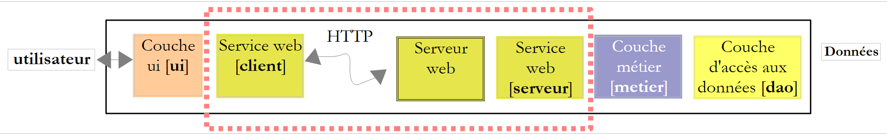
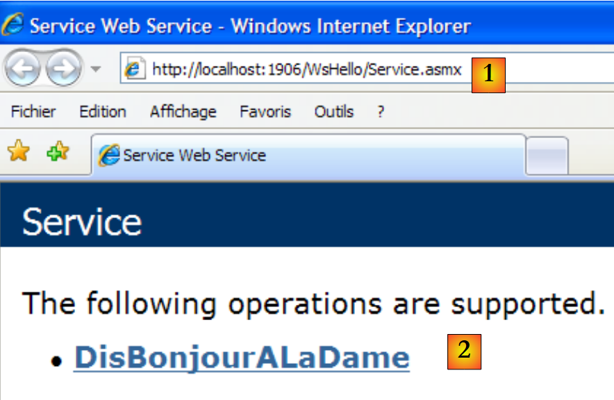
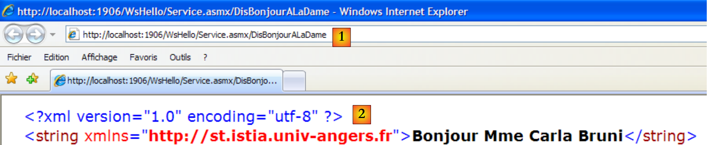
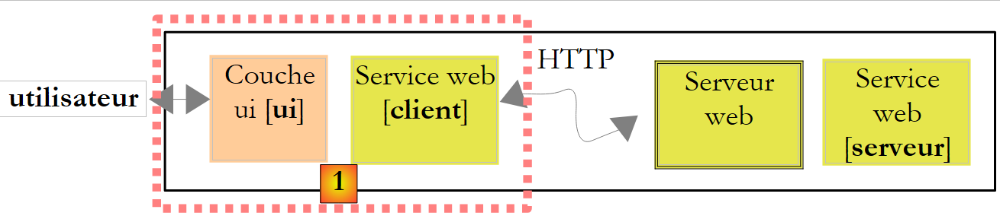
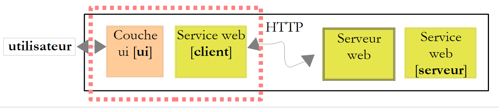
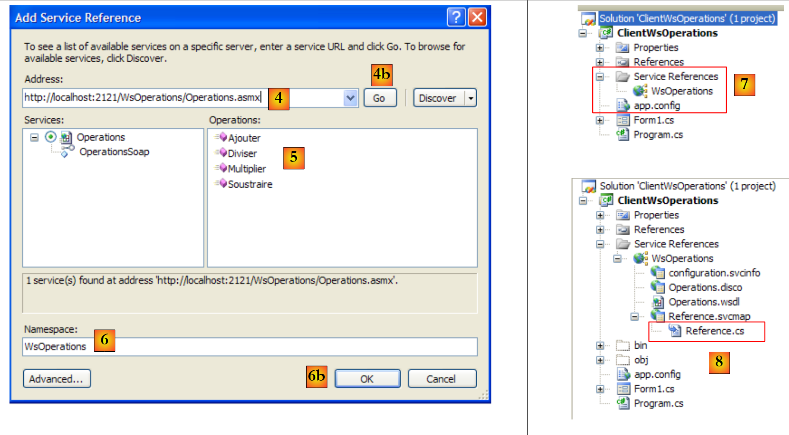
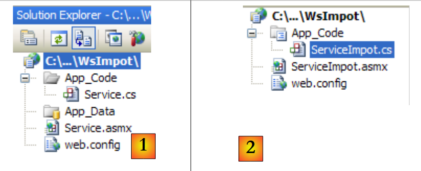
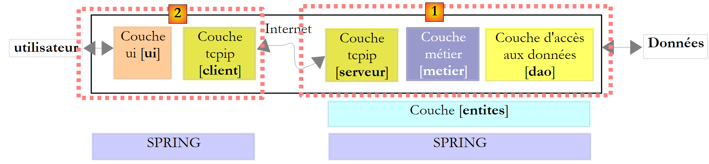
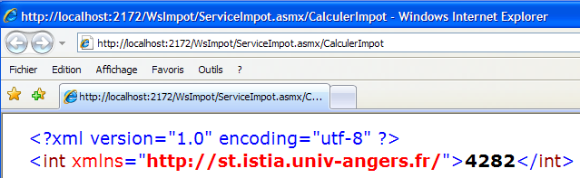
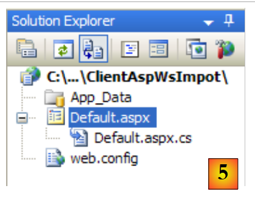

12. Servizi Web
12.1. Introduction
Nel capitolo precedente abbiamo presentato diverse applicazioni client-server TCP/IP. Poiché i client e il server si scambiano righe di testo, possono essere scritti in qualsiasi linguaggio. Il client deve semplicemente conoscere il protocollo di comunicazione previsto dal server.
Anche i servizi Web sono applicazioni server TCP/IP. Presentano le seguenti caratteristiche:
- Sono ospitati da server web e il protocollo di scambio client-server è HTTP (HyperText Transport Protocol), un protocollo che si sovrappone a TCP-IP.
- Il servizio Web dispone di un protocollo di comunicazione standard indipendentemente dal servizio fornito. Un servizio Web offre diversi servizi: S1, S2, ..., Sn. Ciascuno di essi richiede parametri forniti dal client e restituisce a quest’ultimo un risultato. Per ogni servizio, il client deve conoscere:
- il nome esatto del servizio, se
- l’elenco dei parametri da fornire e il loro tipo
- il tipo di risultato restituito dal servizio
Una volta noti questi elementi, il dialogo client-server segue lo stesso formato, indipendentemente dal servizio web interpellato. La scrittura dei client è così standardizzata.
- Per motivi di sicurezza contro gli attacchi provenienti da Internet, molte organizzazioni dispongono di reti private e aprono verso Internet solo alcune porte dei propri server: essenzialmente la porta 80 del servizio web. Tutte le altre porte sono bloccate. Pertanto, le applicazioni client-server descritte nel capitolo precedente sono realizzate all’interno della rete privata (intranet) e in genere non sono accessibili dall’esterno. Ospitare un servizio su un server web lo rende accessibile a tutta la comunità di Internet.
- Il servizio web può essere modellato come un oggetto remoto. I servizi offerti diventano quindi metodi di tale oggetto. Un client può accedere a questo oggetto remoto come se fosse locale. Ciò nasconde l’intera parte relativa alla comunicazione di rete e consente di realizzare un client indipendente da tale livello. Se quest’ultimo dovesse cambiare, il client non dovrà essere modificato.
- Come per le applicazioni client-server TCP/IP presentate nel capitolo precedente, il client e il server possono essere scritti in qualsiasi linguaggio. Essi si scambiano righe di testo. Queste sono composte da due parti:
- le intestazioni necessarie al protocollo HTTP
- il corpo del messaggio. Per una risposta del server al client, il corpo è in formato XML (eXtensible Markup Language). Per una richiesta del client al server, il corpo del messaggio può assumere diverse forme, tra cui XML. La richiesta XML del client può avere un formato specifico denominato SOAP (Simple Object Access Protocol). In questo caso, anche la risposta del server segue il formato SOAP.
L’architettura di un’applicazione client/server basata su un servizio web è la seguente:
 |
Si tratta di un’estensione dell’architettura a tre livelli alla quale vengono aggiunte classi di comunicazione di rete specializzate. Abbiamo già incontrato un’architettura simile con l’applicazione client grafica Windows / server TCP per le imposte nel paragrafo 11.9.1.
Chiariamo questi concetti generali con un primo esempio.
12.2. Un primo servizio web con Visual Web Developer
Realizzeremo una prima applicazione client/server con la seguente architettura semplificata:
 |
12.2.1. La parte server
Abbiamo già detto che un servizio web è ospitato da un server web. La creazione di un servizio web rientra nel quadro generale della programmazione web lato server. In precedenza abbiamo avuto modo di scrivere client web, che rientrano anch'essi nella programmazione web, ma in questo caso lato client. Il termine “programmazione web” indica più spesso la programmazione lato server piuttosto che quella lato client. Per sviluppare servizi web o, più in generale, applicazioni web, Visual C# non è lo strumento più adatto. Utilizzeremo Visual Developer, una delle versioni Express di Visual Studio 2008 scaricabili all’indirizzo [2]: [1]: [http://msdn.microsoft.com/fr-fr/express/future/bb421473(en-us).aspx] (maggio 2008):
 |
- [1]: l’indirizzo per il download
- [2]: la scheda dei download
- [3]: scaricare Visual Developer 2008
Per creare un primo servizio web, dopo aver avviato Visual Developer, si può procedere come segue:
 |
- [1]: selezionare l’opzione File / New Web Site
- [2]: scegliere un'applicazione di tipo ASP.NET Web Service
- [3]: scegliere il linguaggio di sviluppo: C#
- [4]: specificare la cartella in cui creare il progetto
 |
- [5]: il progetto creato in Visual Web Developer
- [6]: la cartella del progetto sul disco
Un'applicazione web è strutturata come segue in Web Developer:
- una directory principale in cui si trovano i documenti del sito web (pagine web statiche HTML, immagini, pagine web dinamiche .aspx, servizi web .asmx, ...). Qui si trova anche il file [web.config], che è il file di configurazione dell'applicazione web. Svolge la stessa funzione del file [App.config] delle applicazioni Windows ed è strutturato allo stesso modo.
- una cartella [App_Code] in cui si trovano le classi e le interfacce del sito web destinate alla compilazione.
- una cartella [App_Data] in cui verranno inseriti i dati utilizzati dalle classi di [App_Code]. Ad esempio, al suo interno si potrà trovare un database SQL Server *.mdf.
[Service.asmx] è il servizio web di cui abbiamo richiesto la creazione. Contiene solo la seguente riga:
<%@ WebService Language="C#" CodeBehind="~/App_Code/Service.cs" Class="Service" %>
Il codice sorgente sopra riportato è destinato al server web che ospiterà l’applicazione. In modalità produzione, questo server è in genere IIS (Internet Information Server), il server web di Microsoft. Visual Web Developer integra un server web leggero che viene utilizzato in modalità sviluppo. La direttiva precedente indica al server web:
- [Service.asmx] è un servizio Web (direttiva WebService)
- scritto in C# (attributo Language)
- che il codice C# del servizio Web si trova nel file [~/App_Code/Service.cs] (attributo CodeBehind). È lì che il server Web andrà a prelevarlo per compilarlo.
- che la classe che implementa il servizio web si chiama Service (attributo Class)
Il codice C# [Service.cs] del servizio web generato da Visual Developer è il seguente:
using System.Web.Services;
[WebService(Namespace = "http://tempuri.org/")]
[WebServiceBinding(ConformsTo = WsiProfiles.BasicProfile1_1)]
// Per consentire la chiamata a questo servizio Web da uno script, utilizzando ASP.NET AJAX, rimuovere il commento dalla riga seguente.
// [System.Web.Script.Services.ScriptService]
public class Service : System.Web.Services.WebService
{
public Service () {
//Rimuovere il commento dalla riga seguente se si utilizzano componenti progettati
//InitializeComponent();
}
[WebMethod]
public string HelloWorld() {
return "Hello World";
}
}
La classe Service assomiglia a una classica classe C#, con tuttavia alcuni punti da notare:
- riga 7: la classe deriva dalla classe WebService definita nello spazio dei nomi System.Web.Services. Questa ereditarietà non è sempre obbligatoria. In questo esempio, in particolare, se ne potrebbe fare a meno.
- riga 3: la classe stessa è preceduta da un attributo [WebService(Namespace="http://tempuri.org/")] destinato a fornire uno spazio dei nomi al servizio web. Un fornitore di classi assegna uno spazio dei nomi alle proprie classi per conferire loro un nome univoco ed evitare così conflitti con classi di altri fornitori che potrebbero avere lo stesso nome. Per i servizi web vale lo stesso principio. Ogni servizio web deve poter essere identificato da un nome univoco, in questo caso http://tempuri.org/. Questo nome può essere qualsiasi cosa. Non deve necessariamente avere la forma di un URI HTTP.
- riga 15: il metodo HelloWorld è preceduto da un attributo [WebMethod] che indica al compilatore che il metodo deve essere reso visibile ai client remoti del servizio web. Un metodo non preceduto da questo attributo non è visibile ai clienti del servizio web. Potrebbe trattarsi di un metodo interno utilizzato da altri metodi ma non destinato alla pubblicazione.
- riga 9: il costruttore del servizio web. È superfluo nella nostra applicazione.
La classe [Service.cs] generata viene trasformata come segue:
using System.Web.Services;
[WebService(Namespace = "http://st.istia.univ-angers.fr")]
[WebServiceBinding(ConformsTo = WsiProfiles.BasicProfile1_1)]
public class Service : System.Web.Services.WebService
{
[WebMethod]
public string DisBonjourALaDame(string nomDeLaDame) {
return string.Format("Bonjour Mme {0}", nomDeLaDame);
}
}
Il file di configurazione [web.config] generato per l’applicazione web è il seguente:
<?xml version="1.0"?>
<!--
Note: As an alternative to hand editing this file you can use the
web admin tool to configure settings for your application. Use
the Website->Asp.Net Configuration option in Visual Studio.
A full list of settings and comments can be found in
machine.config.comments usually located in
\Windows\Microsoft.Net\Framework\v2.x\Config
-->
<configuration>
<configSections>
<sectionGroup name="system.web.extensions" type="System.Web.Configuration.SystemWebExtensionsSectionGroup, System.Web.Extensions, Version=3.5.0.0, Culture=neutral, PublicKeyToken=31BF3856AD364E35">
...
</sectionGroup>
</configSections>
<appSettings/>
<connectionStrings/>
...
</configuration>
Il file è composto da 140 righe. È complesso e non lo commenteremo. Lo manterremo così com’è. Sopra sono presenti i tag <configuration>, <configSections>, <sectionGroup>, <appSettings>, <connectionString> che abbiamo già incontrato nel file [App.config] delle applicazioni Windows.
Abbiamo un servizio web operativo che può essere eseguito:
 |
- [1,2]: clicchiamo con il tasto destro su [Service.asmx] e chiediamo di visualizzare la pagina in un browser
- [3]: Visual Web Developer avvia il proprio server web integrato e ne posiziona l'icona in basso a destra nella barra delle applicazioni. Il server web viene avviato su una porta casuale, in questo caso la 1906. L'URI visualizzato /WsHello è il nome del sito web [4].
Visual Web Developer ha inoltre avviato un browser per visualizzare la pagina richiesta, ovvero [Service.asmx]:
 |
- in [1], l'URI della pagina. Si ritrova l'URI del sito [http://localhost:1906/WsHello] seguito da quello della pagina /Service.asmx.
- In [2], il suffisso .asmx ha indicato al server web che non si trattava di una normale pagina web (suffisso .aspx) che genera una pagina HTML, ma della pagina di un servizio web. A quel punto genera automaticamente una pagina web che presenta un link per ciascuno dei metodi del servizio web con l’attributo [WebMethod]. Questi link consentono di testare i metodi.
Cliccando sul link [2] sopra riportato si accede alla pagina seguente:
 |
- in [1]; si noti l’URI [http://localhost:1906/WsHello/Service.asmx?op=DisBonjourALaDame] della nuova pagina. Si tratta dell’URI del servizio web con un parametro op=M, dove M è il nome di uno dei metodi del servizio web.
- Ricordiamo la firma del metodo [DisBonjourALaDame]:
public string DisBonjourALaDame(string nomDeLaDame) ;
Il metodo accetta un parametro di tipo string e restituisce un risultato anch’esso di tipo string. La pagina ci permette di eseguire il metodo [DisBonjourALaDame]: in [2] inseriamo il valore del parametro nomDeLaDame e in [3] richiediamo l’esecuzione del metodo. Otteniamo il seguente risultato:
 |
- in [1], si noti che l'URI della risposta non è identico a quello della richiesta. È cambiato.
- In [2], la risposta del server web. Si notino i seguenti punti:
- si tratta di una risposta XML e non di HTML
- il risultato del metodo [DisBonjourALaDame] è racchiuso in un tag <string> che ne indica il tipo.
- il tag <string> ha un attributo xmlns (xml name space) che corrisponde allo spazio dei nomi che abbiamo assegnato al nostro servizio web (riga 1 qui sotto).
[WebService(Namespace = "http://st.istia.univ-angers.fr")]
[WebServiceBinding(ConformsTo = WsiProfiles.BasicProfile1_1)]
public class Service : System.Web.Services.WebService
Per capire come il browser web ha effettuato la richiesta, occorre esaminare il codice HTML del modulo di prova:
- riga 11: i valori del modulo (tag form) verranno inviati (attributo method) all'URL [ http://localhost:1906/WsHello/Service.asmx/DisBonjourALaDame] (attributo action).
- riga 19: il campo di immissione si chiama nomDeLaDame (attributo name).
Richiedere l'esecuzione del servizio web [/Service.asmx] ci ha permesso di testarne i metodi e di acquisire una comprensione di base degli scambi client-server.
12.2.2. La parte client
 |
È possibile implementare il client del servizio web remoto sopra indicato con un client TCP/IP di base. Ecco, ad esempio, il dialogo client/server realizzato con un client putty connesso al servizio web remoto (localhost,1906):
- righe 1-5: messaggi inviati dal client putty
- riga 1: comando POST
- righe 6-10: risposta del server. Significa che il client può inviare i valori di POST.
- riga 11: i valori inviati nel formato param1=val1¶m2=val2& .... Alcuni caratteri devono essere compatibili con un URL. È ciò che in precedenza abbiamo definito un URL codificato. In questo caso il modulo ha un unico parametro denominato nomDeLaDame. Il valore inviato in POST ha in totale 23 caratteri. Questa lunghezza deve essere dichiarata nell'intestazione HTTP della riga 4.
- righe 12-22: la risposta del server
- riga 22: il risultato del metodo web [DisBonjourALaDame].
Con Visual C# è possibile generare, tramite una procedura guidata, il client di un servizio web remoto. È proprio ciò che vedremo ora.
 |
Il livello [1] sopra riportato è implementato da un progetto Visual Studio C# di tipo Applicazione Windows denominato ClientWsHello:
 |
- in [1], il progetto ClientWsHello in Visual C#
- in [2], lo spazio dei nomi predefinito del progetto sarà Client (clic destro sul progetto / Proprietà / Applicazione). Questo spazio dei nomi servirà a costruire lo spazio dei nomi del client che verrà generato.
- In [3], clicca con il tasto destro del mouse sul progetto per aggiungere un riferimento a un servizio web remoto
 |
- in [4], inserire l’URI del servizio web creato in precedenza
- in [4b], collegare Visual C# al servizio web indicato da [4]. Visual C# recupererà la descrizione del servizio web e, grazie a tale descrizione, sarà in grado di generarne un client.
- in [5], una volta recuperata la descrizione del servizio web, Visual C# può visualizzarne i metodi pubblici
- In [6], specificare uno spazio dei nomi per il cliente che verrà generato. Questo verrà aggiunto allo spazio dei nomi definito in [2]. Pertanto, lo spazio dei nomi del cliente sarà Client.WsHello.
- In [6b] confermare la procedura guidata.
- In [7], nel progetto compare il riferimento al servizio web WsHello. Inoltre, è stato creato un file di configurazione [app.config].
- In [8], visualizzare tutti i file del progetto.
- In [9], il riferimento al servizio web WsHello contiene vari file che non approfondiremo. Daremo tuttavia un'occhiata al file [Reference.cs], che contiene il codice C# del client generato:
namespace Client.WsHello {
...
public partial class ServiceSoapClient : System.ServiceModel.ClientBase<Client.WsHello.ServiceSoap>, Client.WsHello.ServiceSoap {
public ServiceSoapClient() {
}
...
public string DisBonjourALaDame(string nomDeLaDame) {
Client.WsHello.DisBonjourALaDameRequest inValue = new Client.WsHello.DisBonjourALaDameRequest();
inValue.Body = new Client.WsHello.DisBonjourALaDameRequestBody();
inValue.Body.nomDeLaDame = nomDeLaDame;
Client.WsHello.DisBonjourALaDameResponse retVal = ((Client.WsHello.ServiceSoap)(this)).DisBonjourALaDame(inValue);
return retVal.Body.DisBonjourALaDameResult;
}
}
}
- riga 1: lo spazio dei nomi del client generato è Client.WsHello. Se si desidera modificare questo spazio dei nomi, è qui che bisogna farlo.
- riga 3: la classe ServiceSoapClient è la classe del client generato. Si tratta di una classe proxy, nel senso che nasconderà all’applicazione Windows il fatto che venga utilizzato un servizio web remoto. L’applicazione Windows utilizzerà la classe remota WsHello tramite la classe locale Client.WsHello.ServiceSoapClient. Per creare un’istanza del client, si utilizzerà il costruttore della riga 5:
- riga 8: il metodo DisBonjourALaDame è la controparte, lato client, del metodo DisBonjourALaDame del servizio web. L'applicazione Windows utilizzerà il metodo remoto DisBonjourALaDame tramite il metodo locale Client.WsHello.ServiceSoapClient.DisBonjourALaDame nella forma seguente:
Il file [app.config] generato è il seguente:
<?xml version="1.0" encoding="utf-8" ?>
<configuration>
<system.serviceModel>
<bindings>
....
</bindings>
<client>
<endpoint address="http://localhost:1906/WsHello/Service.asmx"... />
</client>
</system.serviceModel>
</configuration>
Da questo file prenderemo in considerazione solo la riga 8, che contiene l’URI del servizio web. Se l’URI dovesse cambiare, non sarà necessario ricostruire il client Windows. Basterà modificare l’URI del file [app.config].
Torniamo all’architettura dell’applicazione Windows che vogliamo realizzare:
 |
Abbiamo realizzato il livello [client] del servizio web. Il livello [ui] sarà il seguente:
 |
n. | tipo | nome | ruolo |
1 | TextBox | textBoxNomDame | nome della signora |
2 | Button | buttonSalutations | per connettersi al servizio web remoto WsHello e richiamare il metodo DisBonjourALaDame. |
3 | Etichetta | labelBonjour | il risultato restituito dal servizio web |
Il codice del modulo [Form1.cs] è il seguente:
using System;
using System.Windows.Forms;
using Client.WsHello;
namespace ClientSalutations {
public partial class Form1 : Form {
public Form1() {
InitializeComponent();
}
private void buttonSalutations_Click(object sender, EventArgs e) {
// clessidra
Cursor=Cursors.WaitCursor;
// richiesta al servizio web
labelBonjour.Text = new ServiceSoapClient().DisBonjourALaDame(textBoxNomDame.Text.Trim());
// cursore normale
Cursor = Cursors.Arrow;
}
}
}
- riga 15: viene istanziato il client del servizio web. È di tipo Client.WsHello.ServiceSoapClient. Lo spazio dei nomi Client.WsHello è dichiarato alla riga 3. Viene chiamato il metodo locale ServiceSoapClient().DisBonjourALaDame. È noto che esso a sua volta interroga il metodo remoto con lo stesso nome del servizio web.
12.3. Un servizio web per operazioni aritmetiche
Realizzeremo una seconda applicazione client/server che presenta nuovamente la seguente architettura semplificata:
 |
Il servizio web precedente offriva un unico metodo. Consideriamo ora un servizio web che offrirà le 4 operazioni aritmetiche:
- aggiungere(a,b) che restituirà a+b
- sottrarre(a,b) che restituirà a-b
- moltiplicare(a,b), che restituirà a*b
- dividere(a,b) che restituirà a/b
e che verrà interrogato dalla seguente interfaccia grafica:
 |
- in [1], l'operazione da eseguire
- in [2,3]: gli operandi
- in [4], il pulsante di richiamo del servizio web
- in [5], il risultato restituito dal servizio web
12.3.1. La parte server
Realizziamo un progetto di tipo servizio web con Visual Web Developer:
 |
- in [1], l'applicazione web WsOperations generata
- in [2], l'applicazione web WsOperations è stata rinnovata come segue:
- la pagina web [Service.asmx] è stata rinominata [Operations.asmx]
- la classe [Service.cs] è stata rinominata [Operations.cs]
- il file [web.config] è stato eliminato per dimostrare che non è indispensabile.
La pagina web [Service.asmx] contiene la seguente riga:
<%@ WebService Language="C#" CodeBehind="~/App_Code/Operations.cs" Class="Operations" %>
Il servizio web è fornito dalla seguente classe [Operations.cs]:
using System.Web.Services;
[WebService(Namespace = "http://st.istia.univ-angers.fr/")]
[WebServiceBinding(ConformsTo = WsiProfiles.BasicProfile1_1)]
public class Operations : System.Web.Services.WebService
{
[WebMethod]
public double Ajouter(double a, double b)
{
return a + b;
}
[WebMethod]
public double Soustraire(double a, double b)
{
return a - b;
}
[WebMethod]
public double Multiplier(double a, double b)
{
return a * b;
}
[WebMethod]
public double Diviser(double a, double b)
{
return a / b;
}
}
Per pubblicare il servizio web, procediamo come indicato in [3]. Otteniamo quindi la pagina di test dei 4 metodi del servizio web WsOperations:

Il lettore è invitato a testare i 4 metodi.
12.3.2. La parte client
 |
Con Visual C# creiamo un’applicazione Windows ClientWsOperations:
 |
- in [1], il progetto ClientWsOperations in Visual C#
- in [2], lo spazio dei nomi predefinito del progetto sarà Client (clic destro sul progetto / Proprietà / Applicazione). Questo spazio dei nomi servirà a costruire lo spazio dei nomi del client che verrà generato.
- in [3], clicca con il tasto destro del mouse sul progetto per aggiungere un riferimento a un servizio web esistente
 |
- in [4], inserire l’URI del servizio web creato in precedenza. A tal fine, occorre controllare il valore visualizzato nel campo «Indirizzo» del browser che mostra la pagina di test del servizio web.
- in [4b], collegare Visual C# al servizio web indicato da [4]. Visual C# recupererà la descrizione del servizio web e, grazie a tale descrizione, sarà in grado di generarne un client.
- In [5], una volta recuperata la descrizione del servizio web, Visual C# può visualizzarne i metodi pubblici
- in [6], specificare uno spazio dei nomi per il client che verrà generato. Questo verrà aggiunto allo spazio dei nomi definito in [2]. Pertanto, lo spazio dei nomi del client sarà Client.WsOperations.
- In [6b] confermare la procedura guidata.
- In [7], nel progetto compare il riferimento al servizio web WsOperations. Inoltre, è stato creato un file di configurazione [app.config].
Si ricorda che il client generato è di tipo Client.WsOperations.OperationsSoapClient, dove
- Client.WsOperations è lo spazio dei nomi del client del servizio web
- Operations è la classe del servizio web remoto.
Sebbene esista un modo logico per costruire questo nome, spesso è più semplice trovarlo nel file [Reference.cs], che per impostazione predefinita è un file nascosto. Il suo contenuto è il seguente:
namespace Client.WsOperations {
...
public partial class OperationsSoapClient : System.ServiceModel.ClientBase<Client.WsOperations.OperationsSoap>, Client.WsOperations.OperationsSoap {
public OperationsSoapClient() {
}
...
public double Ajouter(double a, double b) {
...
}
public double Soustraire(double a, double b) {
...
}
public double Multiplier(double a, double b) {
...
}
public double Diviser(double a, double b) {
...
}
}
}
I metodi Ajouter, Soustraire, Multiplier, Diviser del servizio web remoto saranno accessibili tramite i metodi proxy con lo stesso nome (righe 8, 12, 16, 20) del client di tipo Client.WsOperations.OperationsSoapClient (riga 3).
Non resta che realizzare l’interfaccia grafica:
 |
n. | tipo | nome | ruolo |
1 | ComboBox | comboBoxOperations | elenco delle operazioni aritmetiche |
2 | TextBox | textBoxA | numero a |
3 | TextBox | textBoxB | numero b |
4 | Pulsante | buttonExécuter | interroga il servizio web remoto |
5 | Etichetta | labelRésultat | il risultato dell'operazione |
Il codice di [Form1.cs] è il seguente:
using System;
using System.Windows.Forms;
using Client.WsOperations;
namespace ClientWsOperations {
public partial class Form1 : Form {
// tabella delle operazioni
private string[] opérations = { "Ajouter", "Soustraire", "Multiplier", "Diviser" };
// servizio web da contattare
private OperationsSoapClient opérateur = new OperationsSoapClient();
// costruttore
public Form1() {
InitializeComponent();
}
private void Form1_Load(object sender, EventArgs e) {
// compilazione del menu a tendina delle operazioni
comboBoxOperations.Items.AddRange(opérations);
comboBoxOperations.SelectedIndex = 0;
}
private void buttonExécuter_Click(object sender, EventArgs e) {
// verifica dei parametri a e b dell'operazione
textBoxMessage.Text = "";
bool erreur = false;
Double a = 0;
if (!Double.TryParse(textBoxA.Text, out a)) {
textBoxMessage.Text += "Nombre a erroné...";
}
Double b = 0;
if (!Double.TryParse(textBoxB.Text, out b)) {
textBoxMessage.Text += String.Format("{0}Nombre b erroné...", Environment.NewLine);
}
if (erreur) {
return;
}
// esecuzione dell'operazione
Double c=0;
try {
switch (comboBoxOperations.SelectedItem.ToString()) {
case "Ajouter":
c=opérateur.Ajouter(a, b);
break;
case "Soustraire":
c=opérateur.Soustraire(a, b);
break;
case "Multiplier":
c=opérateur.Multiplier(a, b);
break;
case "Diviser":
c=opérateur.Diviser(a, b);
break;
}
// visualizzazione del risultato
labelRésultat.Text = c.ToString();
} catch (Exception ex) {
textBoxMessage.Text = ex.Message;
}
}
}
}
- riga 3: lo spazio dei nomi del client del servizio web remoto
- riga 10: il client del servizio web remoto viene istanziato contemporaneamente al modulo
- righe 17-21: il menu a tendina delle operazioni viene compilato al momento del caricamento iniziale del modulo
- riga 23: esecuzione dell'operazione richiesta dall'utente
- righe 25-37: si verifica che i valori inseriti a e b siano effettivamente numeri reali
- righe 41-54: uno switch per eseguire l'operazione remota richiesta dall'utente
- righe 43, 46, 49, 52: viene interpellato il client locale. In modo trasparente, quest'ultimo interroga il servizio web remoto.
12.4. Un servizio web per il calcolo delle imposte
Riprendiamo l’applicazione per il calcolo delle imposte, ormai ben nota. L’ultima volta che ci abbiamo lavorato, ne avevamo fatto un server TCP remoto che si poteva chiamare su Internet. Ora ne facciamo un servizio web.
L’architettura della versione 8 era la seguente:
 |
L’architettura della versione 9 sarà simile:
 |
Si tratta di un'architettura simile a quella della versione 8 esaminata nel paragrafo 11.9.1, ma in cui il server e il client TCP sono sostituiti da un servizio web e dal suo client proxy. Riprenderemo integralmente i livelli [ui], [metier] e [dao] della versione 8.
12.4.1. La parte server
Creiamo un progetto di tipo servizio web con Visual Web Developer:
 |
- in [1], l’applicazione web WsImpot generata
- in [2], l'applicazione web WsImpot è stata ridisegnata come segue:
- la pagina web [Service.asmx] è stata rinominata [ServiceImpot.asmx]
- la classe [Service.cs] è stata rinominata [ServiceImpot .cs]
La pagina web [ServiceImpot.asmx] contiene la seguente riga:
<%@ WebService Language="C#" CodeBehind="~/App_Code/ServiceImpot.cs" Class="ServiceImpot" %>
Il servizio web è fornito dalla seguente classe [ServiceImpot.cs]:
using System.Web.Services;
[WebService(Namespace = "http://st.istia.univ-angers.fr/")]
[WebServiceBinding(ConformsTo = WsiProfiles.BasicProfile1_1)]
public class ServiceImpot : System.Web.Services.WebService
{
[WebMethod]
public int CalculerImpot(bool marié, int nbEnfants, int salaire)
{
return 0;
}
}
Il servizio web esporrà solo il metodo CalculerImpot della riga 9.
Torniamo all’architettura client/server della versione 8:
 |
Il progetto Visual Studio del server [1] era il seguente:
 |
- in [1], il progetto. In esso erano presenti i seguenti elementi:
- [ServeurImpot.cs]: il server TCP/IP per il calcolo delle imposte sotto forma di applicazione da console.
- [dbimpots.sdf]: il database SQL Server Compact della versione 7 descritto al paragrafo 9.8.5.
- [App.config]: il file di configurazione dell’applicazione.
- In [2], la cartella [lib] contiene i file DLL necessari al progetto:
- [ImpotsV7-dao]: il livello [dao] della versione 7
- [ImpotsV7-metier]: il livello [metier] della versione 7
- [antlr.runtime, CommonLogging, Spring.Core] per Spring
- in [3], i riferimenti del progetto
I livelli [metier] e [dao] della versione esistono già: sono quelli utilizzati nelle versioni 7 e 8. Si presentano sotto forma di DLL che integriamo nel progetto nel modo seguente:
 |
- in [1] la cartella [lib] dal server della versione 8 è stata copiata nel progetto del servizio web della versione 9.
- In [2] si modificano le proprietà della pagina per aggiungere i file DLL della cartella [lib] e [4] ai riferimenti del progetto [3].
Dopo questa operazione, disponiamo di tutti i livelli necessari per il server [1] riportato di seguito:
 |
Se gli elementi del server [1], [serveur], [metier], [dao], [entites], [spring] sono tutti presenti nel progetto Visual Studio, ci manca l’elemento che li istanzierà all’avvio dell’applicazione web. Nella versione 8, una classe principale con il metodo statico [Main] si occupava di istanziare i livelli con l’aiuto di Spring. In un’applicazione web, la classe in grado di svolgere un compito analogo è quella associata al file [Global.asax] :
 |
- in [1], si aggiunge un nuovo elemento al progetto web
- in [2], si seleziona il tipo «Global Application Class»
- in [3], il nome proposto di default per questo elemento
- in [4], si conferma l'aggiunta
- in [5], il nuovo elemento è stato integrato nel progetto
Diamo un’occhiata al contenuto del file [Global.asax]:
<%@ Application Language="C#" %>
<script runat="server">
void Application_Start(object sender, EventArgs e)
{
// Codice eseguito all'avvio dell'applicazione
}
void Application_End(object sender, EventArgs e)
{
// Codice eseguito alla chiusura dell'applicazione
}
void Application_Error(object sender, EventArgs e)
{
// Codice eseguito quando si verifica un errore non gestito
}
void Session_Start(object sender, EventArgs e)
{
// Codice eseguito all’avvio di una nuova sessione
}
void Session_End(object sender, EventArgs e)
{
// Codice eseguito al termine di una sessione.
}
</script>
Il file è un mix di tag destinati al server web (righe 1, 3, 30) e codice C#. Questo metodo era l’unico utilizzato con ASP, il predecessore di ASP.NET, che rappresenta l’attuale tecnologia di Microsoft per la programmazione web. Con ASP.NET, questo metodo è ancora utilizzabile ma non è quello predefinito. Il metodo predefinito è quello denominato «CodeBehind», che abbiamo incontrato nelle pagine dei servizi web, ad esempio qui in [ServiceImpot.asmx]:
<%@ WebService Language="C#" CodeBehind="~/App_Code/ServiceImpot.cs" Class="ServiceImpot" %>
L'attributo CodeBehind specifica dove si trova il codice sorgente della pagina [ServiceImpot.asmx]. Senza questo attributo, il codice sorgente si troverebbe nella pagina [ServiceImpot.asmx] con una sintassi analoga a quella presente in [Global.asax]. Non manterremo il file [Global.asax] così come è stato generato, ma il suo codice ci permette di capire a cosa serve:
- la classe associata a Global.asax viene istanziata all’avvio dell’applicazione. La sua durata corrisponde a quella dell’intera applicazione. In pratica, scompare solo quando il server web viene arrestato.
- Il metodo Application_Start viene quindi eseguito. È l’unica volta in cui verrà eseguito. Per questo motivo viene utilizzato per istanziare oggetti condivisi tra tutti gli utenti. Questi oggetti vengono collocati:
- oppure nei campi statici della classe associata a Global.asax. Poiché questa classe è presente in modo permanente, qualsiasi richiesta da parte di qualsiasi utente può leggerne le informazioni.
- oppure nel contenitore Application. Anche questo contenitore viene creato all’avvio dell’applicazione e la sua durata corrisponde a quella dell’applicazione.
- Per inserire un dato in questo contenitore, si scrive Application["clé"]=valore;
- per recuperarlo, si scrive T valore=(T)Application["clé"]; dove T è il tipo di valeur.
- Il metodo Session_Start viene eseguito ogni volta che un nuovo utente effettua una richiesta. Come si riconosce un nuovo utente? Ogni utente (il più delle volte un browser) riceve, al termine della sua prima richiesta, un token di sessione che è una stringa di caratteri univoca per ciascun utente. Successivamente, l’utente rinvia il token di sessione ricevuto ad ogni nuova richiesta che effettua. Ciò consente al server web di riconoscerlo. Nel corso delle diverse richieste dello stesso utente, i dati a lui specifici possono essere memorizzati nel contenitore Session:
- per inserire un dato in questo contenitore, si scrive Session["clé"]=valore;
- per recuperarlo, si scrive T valore=(T)Session["clé"]; dove T è il tipo di valeur.
La durata di una sessione è limitata per impostazione predefinita a 20 minuti di inattività dell’utente (c.a.d, ovvero se non ha rinviato il proprio token di sessione da 20 minuti).
- Il metodo Application_Error viene eseguito quando un'eccezione non gestita dall'applicazione web viene segnalata al server web.
- Gli altri metodi vengono utilizzati più raramente.
Dopo queste considerazioni generali, a cosa può servirci Global.asax? Utilizzeremo il suo metodo Application_Start per inizializzare i livelli [metier], [dao] e [entites] contenuti nei DLL e [ImpotsV7-metier, ImpotsV7-dao]. Utilizzeremo Spring per istanziarli. I riferimenti dei livelli così creati verranno poi memorizzati in campi statici della classe associata a Global.asax.
Come primo passo, spostiamo il codice C# da Global.asax in una classe separata. Il progetto si evolve come segue:
 |
In [1], il file [Global.asax] verrà associato alla classe [Global.cs] [2] con la seguente unica riga:
<%@ Application Language="C#" Inherits="WsImpot.Global"%>
L'attributo Inherits="WsImpot.Global" indica che la classe associata a Global.asax eredita dalla classe WsImpot.Global. Questa classe è definita in [Global.cs] nel modo seguente:
using System;
using Metier;
using Spring.Context.Support;
namespace WsImpot
{
public class Global : System.Web.HttpApplication
{
// livello business
public static IImpotMetier Metier;
// Metodo eseguito all'avvio dell'applicazione
private void Application_Start(object sender, EventArgs e)
{
// Istanze dei livelli [metier] e [dao]
Metier = ContextRegistry.GetContext().GetObject("metier") as IImpotMetier;
}
}
}
- riga 4: lo spazio dei nomi della classe
- riga 6: la classe Global. È possibile assegnarle il nome desiderato. L’importante è che derivi dalla classe System.Web.HttpApplication.
- riga 9: un campo statico pubblico che conterrà un riferimento al livello [metier].
- riga 12: il metodo Application_Start che verrà eseguito all’avvio dell’applicazione.
- riga 15: Spring viene utilizzato per elaborare il file [web.config], nel quale troverà gli oggetti da istanziare per creare i livelli [metier] e [dao]. Non vi è alcuna differenza tra l’utilizzo di Spring con [App.config] in un’applicazione Windows e quello di Spring con [web.config] in un’applicazione web. [web.config] e [App.config] hanno inoltre la stessa struttura. La riga 15 memorizza il riferimento al livello [metier] nel campo statico della riga 9, in modo che tale riferimento sia disponibile per tutte le richieste di tutti gli utenti.
Il file [web.config] sarà il seguente:
<?xml version="1.0" encoding="utf-8" ?>
<configuration>
<configSections>
<sectionGroup name="spring">
<section name="context" type="Spring.Context.Support.ContextHandler, Spring.Core" />
<section name="objects" type="Spring.Context.Support.DefaultSectionHandler, Spring.Core" />
</sectionGroup>
</configSections>
<spring>
<context>
<resource uri="config://spring/objects" />
</context>
<objects xmlns="http://www.springframework.net">
<object name="dao" type="Dao.DataBaseImpot, ImpotsV7-dao">
<constructor-arg index="0" value="MySql.Data.MySqlClient"/>
<constructor-arg index="1" value="Server=localhost;Database=bdimpots;Uid=admimpots;Pwd=mdpimpots;"/>
<constructor-arg index="2" value="select limite, coeffr, coeffn from tranches"/>
</object>
<object name="metier" type="Metier.ImpotMetier, ImpotsV7-metier">
<constructor-arg index="0" ref="dao"/>
</object>
</objects>
</spring>
</configuration>
Si tratta del file [App.config] utilizzato nella versione 7 dell’applicazione e analizzato nel paragrafo 9.8.4.
- righe 16-20: definiscono un livello [dao] che opera con un database MySQL5. Questo database è stato descritto al paragrafo 9.8.1.
- righe 21-23: definiscono il livello [metier]
Torniamo al puzzle del server:
 |
All’avvio dell’applicazione, sono stati istanziati i livelli [metier] e [dao]. La durata di vita dei livelli corrisponde a quella dell’applicazione stessa. Quando viene istanziato il servizio web? Di fatto, ad ogni richiesta che gli viene inviata. Al termine della richiesta, l’oggetto che l’ha gestita viene eliminato. Un servizio web è quindi, a prima vista, stateless. Non può memorizzare informazioni tra una richiesta e l’altra in campi di sua proprietà. Può invece memorizzarle nella sessione dell’utente. A tal fine, i metodi che espone devono essere contrassegnati con un attributo speciale:
[WebMethod(EnableSession=true)]
public int CalculerImpot(bool marié, int nbEnfants, int salaire)
....
Nella riga 1 sopra riportata, si autorizza il metodo CalculerImpot ad accedere al contenitore Session di cui abbiamo parlato in precedenza. Non dovremo utilizzare questo attributo nella nostra applicazione. Il servizio web WsImpot verrà quindi istanziato ad ogni richiesta e sarà stateless.
Ora possiamo scrivere il codice [ServiceImpot.cs] che implementa il servizio web:
using System.Web.Services;
using WsImpot;
[WebService(Namespace = "http://st.istia.univ-angers.fr/")]
[WebServiceBinding(ConformsTo = WsiProfiles.BasicProfile1_1)]
public class ServiceImpot : System.Web.Services.WebService
{
[WebMethod]
public int CalculerImpot(bool marié, int nbEnfants, int salaire)
{
return Global.Metier.CalculerImpot(marié, nbEnfants, salaire);
}
}
- riga 10: l’unico metodo del servizio web
- riga 12: si utilizza il metodo CalculerImpot del livello [metier]. Un riferimento a questo livello si trova nel campo statico Metier della classe Global. Quest'ultima appartiene allo spazio dei nomi WsImpot (riga 2).
Siamo pronti per avviare il servizio web. Prima è necessario avviare SGBD e MySQL5 affinché il database bdimpots sia accessibile. Fatto ciò, avviamo il servizio web [1]:
 |
Il browser visualizza quindi la pagina [2]. Seguiamo il link:
 |
Assegniamo un valore a ciascuno dei tre parametri del metodo CalculerImpot e ne richiediamo l’esecuzione. Otteniamo il seguente risultato, che è corretto:

12.4.2. Un client grafico Windows per il servizio web remoto
Ora che il servizio web è stato scritto, passiamo al client. Torniamo all’architettura dell’applicazione client/server:
 |
Dobbiamo scrivere il client [2]. L’interfaccia grafica sarà identica a quella della versione 8:
 |
Per sviluppare la parte [client] della versione 9, partiremo dalla parte [client] della versione 8, apportando poi le modifiche necessarie. Duplichiamo il progetto Visual Studio esaminato nel paragrafo 11.9.4.1, lo rinominiamo ClientWsImpot e lo carichiamo in Visual Studio:
 |
La soluzione Visual Studio della versione 8 era costituita da 2 progetti:
- il progetto [metier] [1], che era un client TCP del server TCP per il calcolo delle imposte
- il progetto [ui] [2] relativo all’interfaccia grafica.
Le modifiche da apportare sono le seguenti:
- il progetto [metier] deve ora fungere da client di un servizio web
- il progetto [ui] deve fare riferimento a DLL del nuovo livello [metier]
- la configurazione del livello [metier] in [App.config] deve essere modificata.
12.4.2.1. Il nuovo livello [metier]
 |
- in [1], IImpotMetier è l'interfaccia del livello [metier] e ImpotMetierTcp la sua implementazione da parte di un client TCP
- in [2], eliminiamo l’implementazione ImpotMetierTcp. Dobbiamo creare un’altra implementazione dell’interfaccia IImpotMetier che fungerà da client di un servizio web.
- In [3], chiamiamo Client lo spazio dei nomi predefinito del progetto [metier]. Il file DLL che verrà generato si chiamerà [ImpotsV9-metier.dll].
 |
- in [4], creiamo un riferimento al servizio web WsImpot.
- in [5], lo configuriamo e lo convalidiamo.
- In [6], è stato creato il riferimento al servizio web WsImpot ed è stato generato un file [app.config].
Nel file nascosto [Reference.cs]:
- lo spazio dei nomi è Client.WsImpot
- la classe client si chiama ServiceImpotSoapClient
- ha un unico metodo di firma:
public int CalculerImpot(bool marié, int nbEnfants, int salaire) ;
Resta da implementare l'interfaccia IImpotMetier:
namespace Metier {
public interface IImpotMetier {
int CalculerImpot(bool marié, int nbEnfants, int salaire);
}
}
La implementiamo con la seguente classe ImpotMetierWs:
using System.Net.Sockets;
using System.IO;
using Client.WsImpot;
namespace Metier {
public class ImpotMetierWs : IImpotMetier {
// client del servizio web remoto
private ServiceImpotSoapClient client = new ServiceImpotSoapClient();
// calcolo dell'imposta
public int CalculerImpot(bool marié, int nbEnfants, int salaire) {
return client.CalculerImpot(marié, nbEnfants, salaire);
}
}
}
- riga 6: la classe ImpotMetierWs implementa l'interfaccia IImpotMetier.
- riga 9: alla creazione di un'istanza di ImpotMetierWs, il campo client viene inizializzato con un'istanza di un client del servizio web di calcolo delle imposte.
- riga 12: l'unico metodo dell'interfaccia IImpotMetier da implementare.
- riga 13: si utilizza il metodo CalculerImpot del client del servizio web remoto per il calcolo delle imposte. In definitiva, sarà il metodo CalculerImpot del servizio web remoto a essere interrogato.
È possibile generare il metodo DLL del progetto:
 |
- in [1], il progetto [client] nel suo stato finale
- in [2], generazione del file DLL del progetto
- in [3], il file DLL e ImpotsV9-metier.dll si trovano nella cartella /bin/Release del progetto.
12.4.2.2. Il nuovo layer [ui]
 |
Il livello [client] del client è stato scritto. Resta da scrivere il livello [ui]. Torniamo al progetto Visual Studio:
 |
- in [1], il progetto [ui] derivato dalla versione 8
- in [2], il progetto DLL ImpotsV8-metier del vecchio livello [metier] viene sostituito dal progetto DLL ImpotsV9-metier del nuovo livello
- in [3], i file DLL e ImpotsV9-metier vengono aggiunti ai riferimenti del progetto.
La seconda modifica riguarda il file [App.config]. È importante ricordare che questo file viene utilizzato da Spring per istanziare il livello [metier]. Poiché quest’ultimo è cambiato, è necessario modificare la configurazione di [App.config]. D'altra parte, [App.config] deve disporre della configurazione che consenta di collegarsi al servizio web remoto di calcolo delle imposte. Tale configurazione è stata generata nel file [app.config] del progetto [metier] quando vi è stato aggiunto il riferimento al servizio web remoto.
Il file [App.config] diventa quindi il seguente:
<?xml version="1.0" encoding="utf-8" ?>
<configuration>
<configSections>
<sectionGroup name="spring">
<section name="context" type="Spring.Context.Support.ContextHandler, Spring.Core" />
<section name="objects" type="Spring.Context.Support.DefaultSectionHandler, Spring.Core" />
</sectionGroup>
</configSections>
<spring>
<context>
<resource uri="config://spring/objects" />
</context>
<objects xmlns="http://www.springframework.net">
<object name="metier" type="Metier.ImpotMetierWs, ImpotsV9-metier">
</object>
</objects>
</spring>
<!-- servizio web -->
<system.serviceModel>
<bindings>
<basicHttpBinding>
<binding name="ServiceImpotSoap" closeTimeout="00:01:00" openTimeout="00:01:00"
receiveTimeout="00:10:00" sendTimeout="00:01:00" allowCookies="false"
bypassProxyOnLocal="false" hostNameComparisonMode="StrongWildcard"
maxBufferSize="65536" maxBufferPoolSize="524288" maxReceivedMessageSize="65536"
messageEncoding="Text" textEncoding="utf-8" transferMode="Buffered"
useDefaultWebProxy="true">
<readerQuotas maxDepth="32" maxStringContentLength="8192" maxArrayLength="16384"
maxBytesPerRead="4096" maxNameTableCharCount="16384" />
<security mode="None">
<transport clientCredentialType="None" proxyCredentialType="None"
realm="" />
<message clientCredentialType="UserName" algorithmSuite="Default" />
</security>
</binding>
</basicHttpBinding>
</bindings>
<client>
<endpoint address="http://localhost:2172/WsImpot/ServiceImpot.asmx"
binding="basicHttpBinding" bindingConfiguration="ServiceImpotSoap"
contract="WsImpot.ServiceImpotSoap" name="ServiceImpotSoap" />
</client>
</system.serviceModel>
</configuration>
- righe 15-18: Spring istanzia un solo oggetto, il livello [metier]
- riga 16: il livello [metier] viene istanziato dalla classe [Metier.ImpotMetierWs], che si trova all’interno di DLL ImpotsV9-metier.
- righe 22-46: la configurazione del client del servizio web remoto. Si tratta di un copia/incolla del contenuto del file [app.config] del progetto [metier].
Siamo pronti. Eseguiamo l’applicazione con Ctrl-F5 (il servizio web deve essere avviato, i file SGBD e MySQL5 devono essere avviati, la porta indicata alla riga 42 sopra deve essere quella corretta):
 |
12.5. Un client web per il servizio web di calcolo delle imposte
Riprendiamo l’architettura dell’applicazione client/server appena descritta:
 |
Il livello [ui] sopra indicato era stato implementato tramite un client grafico Windows. Ora lo implementiamo con un'interfaccia web:
 |
Si tratta di un cambiamento significativo per gli utenti. Attualmente la nostra applicazione client/server, versione 9, è in grado di servire più clienti contemporaneamente. Si tratta di un miglioramento rispetto alla versione 8, che serviva un solo cliente alla volta. Il vincolo è che gli utenti che desiderano utilizzare il servizio web di calcolo delle imposte devono disporre sul proprio computer del client Windows che abbiamo sviluppato. In questa nuova versione, che chiameremo versione 10, gli utenti potranno accedere, tramite il proprio browser, al servizio web di calcolo delle imposte.
Nell’architettura sopra descritta:
- il lato server rimane invariato. Rimane tale e quale alla versione 9.
- Sul lato client, il livello [client du service web] rimane invariato. È stato incapsulato in DLL e [ImpotsV9-metier]. Riutilizzeremo questo DLL.
- In definitiva, l’unica modifica consiste nel sostituire un’interfaccia grafica Windows con un’interfaccia web.
Affronteremo alcuni nuovi concetti di programmazione web lato server. Poiché lo scopo di questo documento non è insegnare la programmazione web, cercheremo di spiegare l’approccio che verrà seguito senza entrare nei dettagli. Ci sarà quindi un aspetto un po’ “magico” in questa sezione. Ci sembra tuttavia interessante seguire questo approccio per mostrare un nuovo esempio di architettura multistrato in cui uno degli strati viene modificato.
L’architettura della versione 10 è quindi la seguente:
 |
Abbiamo già tutti gli strati, tranne quello [web]. Per comprendere meglio ciò che verrà fatto, dobbiamo essere più precisi riguardo all’architettura del client. Sarà la seguente:
 |
- l’utente web ha nel proprio browser un modulo web
- questo modulo viene inviato al server web 1, che lo fa elaborare dal livello [web]
- il livello [web] richiederà i servizi del client del servizio web remoto, incapsulati in [ImpotsV9-metier.dll].
- il client del servizio web remoto comunicherà con il server web 2 che ospita il servizio web remoto.
- La risposta del servizio web remoto risalirà fino al livello web del client, che la formatterà in una pagina da inviare all’utente.
Il nostro compito in questo caso è quindi:
- costruire il modulo web che l’utente vedrà nel proprio browser
- scrivere l’applicazione web che elaborerà la richiesta dell’utente e gli invierà una risposta sotto forma di una nuova pagina web. Questa sarà in realtà la stessa del modulo, al quale avremo aggiunto l’importo dell’imposta da pagare
- scrivere il “collante” che fa funzionare il tutto insieme.
Tutto ciò verrà realizzato utilizzando un nuovo sito web creato con Visual Web Developer:
 |
- [1]: selezionare l’opzione File / New Web Site
- [2]: scegliere un’applicazione di tipo ASP.NET Web Site
- [3]: scegliere il linguaggio di sviluppo: C#
- [4]: specificare la cartella in cui creare il progetto
 |
- [5]: il progetto creato in Visual Web Developer
- [Default.aspx] è una pagina web denominata "pagina predefinita". È quella che verrà visualizzata se si richiede l'URL http://.../ClientAspImpot senza specificare alcun documento. È questa pagina che conterrà il modulo di calcolo dell'imposta che l'utente vedrà nel proprio browser.
- [Default.aspx.cs] è la classe associata alla pagina, quella che genererà il modulo inviato all’utente e lo elaborerà una volta che quest’ultimo lo avrà compilato e convalidato.
- [web.config] è il file di configurazione dell’applicazione. A differenza delle volte precedenti, lo manterremo.
Se torniamo all’architettura che dobbiamo costruire:
 |
- [1] sarà implementato da [Default.aspx]
- [2] sarà implementato da [Default.aspx.cs]
- [3] sarà implementata da DLL e [ImpotV9-metier]
Iniziamo con l’implementazione del livello [3]. Ci sono diverse fasi:
 |
- in [1], la cartella [lib] del client grafico Windows versione 9 viene copiata nella cartella del progetto web [ClientAspWsImpot]. L'operazione viene eseguita tramite Esplora risorse di Windows. Per visualizzare questa cartella nella soluzione Web Developer, è necessario aggiornare la soluzione utilizzando il pulsante [2].
- Quindi aggiungerle ai riferimenti del progetto [3,4,5]. Le DLL a cui si fa riferimento vengono automaticamente ricopiate nella cartella /bin del progetto [6].
Ora sono disponibili le DLL necessarie per il funzionamento di Spring ed è implementato anche il livello client del servizio web remoto. Sebbene il codice di quest’ultimo sia presente, resta da configurarlo. Nella versione 9, era configurato tramite il seguente file [App.config]:
<?xml version="1.0" encoding="utf-8" ?>
<configuration>
<configSections>
<sectionGroup name="spring">
<section name="context" type="Spring.Context.Support.ContextHandler, Spring.Core" />
<section name="objects" type="Spring.Context.Support.DefaultSectionHandler, Spring.Core" />
</sectionGroup>
</configSections>
<spring>
<context>
<resource uri="config://spring/objects" />
</context>
<objects xmlns="http://www.springframework.net">
<object name="metier" type="Metier.ImpotMetierWs, ImpotsV9-metier">
</object>
</objects>
</spring>
<!-- servizio web -->
<system.serviceModel>
<bindings>
<basicHttpBinding>
...
</basicHttpBinding>
</bindings>
<client>
<endpoint address="http://localhost:2172/WsImpot/ServiceImpot.asmx"
binding="basicHttpBinding" bindingConfiguration="ServiceImpotSoap"
contract="WsImpot.ServiceImpotSoap" name="ServiceImpotSoap" />
</client>
</system.serviceModel>
</configuration>
Riprendiamo questa configurazione identica e la integriamo nel file [web.config] nel modo seguente:
<?xml version="1.0"?>
<configuration>
<configSections>
<sectionGroup name="system.web.extensions"...>
...
</sectionGroup>
<!-- inizio sezione Spring -->
<sectionGroup name="spring">
<section name="context" type="Spring.Context.Support.ContextHandler, Spring.Core" />
<section name="objects" type="Spring.Context.Support.DefaultSectionHandler, Spring.Core" />
</sectionGroup>
<!-- fine sezione Spring -->
</configSections>
<!-- inizio configurazione Spring -->
<spring>
<context>
<resource uri="config://spring/objects" />
</context>
<objects xmlns="http://www.springframework.net">
<object name="metier" type="Metier.ImpotMetierWs, ImpotsV9-metier">
</object>
</objects>
</spring>
<!-- fine configurazione Spring -->
<!-- inizio configurazione client del servizio web remoto -->
<system.serviceModel>
<bindings>
<basicHttpBinding>
...
</basicHttpBinding>
</bindings>
<client>
<endpoint address="http://localhost:2172/WsImpot/ServiceImpot.asmx"
binding="basicHttpBinding" bindingConfiguration="ServiceImpotSoap"
contract="WsImpot.ServiceImpotSoap" name="ServiceImpotSoap" />
</client>
</system.serviceModel>
<!-- fine configurazione client del servizio web remoto -->
<!-- altre configurazioni già presenti nel file web.config generato -->
...
</configuration>
Si noti che la riga 37 fa riferimento alla porta del servizio web remoto. Questa porta può variare poiché Visual Developer avvia il servizio web su una porta casuale.
Torniamo all’architettura del client web che dobbiamo realizzare:
 |
- [1] sarà implementato da [Default.aspx]
- [2] sarà implementata da [Default.aspx.cs]
- [3] è stata implementata da DLL [ImpotV9-metier]
Abbiamo appena implementato il livello [3]. Passiamo all’interfaccia web [1] implementata dalla pagina [Default.aspx]. Facciamo doppio clic sulla pagina [Default.aspx] per passare alla modalità di progettazione.
 |
Esistono due modi per creare una pagina web:
- graficamente, come in [2]. In questo caso occorre selezionare la modalità [Design] in [1]. Questa barra dei pulsanti si trova in basso nella barra di stato dell'editor della pagina web.
- con un linguaggio di tag, come in [3]. In questo caso occorre selezionare la modalità [Source] in [1].
Le modalità [Design] e [Source] sono bidirezionali: una modifica apportata in modalità [Design] si traduce in una modifica in modalità [Source] e viceversa. Si ricorda che il modulo web da visualizzare nel browser è il seguente:
 |
- in [1], il modulo visualizzato in un browser
- in [2], i componenti utilizzati per costruirlo
- in [3], la pagina di progettazione del modulo. Comprende i seguenti elementi:
- riga A, due pulsanti di opzione denominati RadioButtonOui e RadioButtonNon
- riga B, un campo di immissione denominato TextBoxEnfants e un'etichetta denominata LabelErreurEnfants
- riga C, un campo di immissione denominato TextBoxSalaire e un'etichetta denominata LabelErreurSalaire
- riga D, un'etichetta denominata LabelImpot
- riga E, due pulsanti denominati ButtonCalculer e ButtonEffacer
Una volta posizionato un componente sull’area di progettazione, è possibile accedere alle sue proprietà:
 |
- in [1], accesso alle proprietà di un componente
- in [2], la scheda delle proprietà del componente [LabelErreurEnfants ]
- in [3], (ID) è il nome del componente
- in [4], abbiamo assegnato il colore rosso ai caratteri dell'etichetta.
Non basta inserire i componenti nel modulo e poi impostarne le proprietà. È necessario anche organizzarne la disposizione. In un'interfaccia grafica Windows, questa disposizione è assoluta. Si trascina il componente dove si desidera che si trovi. In una pagina web è diverso, più complesso ma anche più potente. Questo aspetto non verrà trattato in questa sede.
Il codice sorgente [Default.aspx] generato da questa progettazione è il seguente:
<%@ Page Language="C#" AutoEventWireup="true" CodeFile="Default.aspx.cs" Inherits="_Default" %>
<!DOCTYPE html PUBLIC "-//W3C//DTD XHTML 1.0 Transitional//EN" "http://www.w3.org/TR/xhtml1/DTD/xhtml1-transitional.dtd">
<html xmlns="http://www.w3.org/1999/xhtml">
<head runat="server">
<title>Calculer votre impôt</title>
</head>
<body bgcolor="#ffff99">
<h2>
Calculer votre impôt</h2>
<form id="form1" runat="server">
<asp:ScriptManager ID="ScriptManager2" runat="server" EnablePartialRendering="true" />
<asp:UpdatePanel runat="server" ID="UpdatePanelPam">
<ContentTemplate>
<div>
</div>
<table>
<tr>
<td>
Etes-vous marié(e)
</td>
<td>
<asp:RadioButton ID="RadioButtonOui" runat="server" GroupName="statut" Text="Oui" />
<asp:RadioButton ID="RadioButtonNon" runat="server" GroupName="statut" Text="Non"
Checked="True" />
</td>
</tr>
<tr>
<td>
Nombre d'figli
</td>
<td>
<asp:TextBox ID="TextBoxEnfants" runat="server" Columns="3"></asp:TextBox>
</td>
<td>
<asp:Label ID="LabelErreurEnfants" runat="server" ForeColor="#FF3300"></asp:Label>
</td>
</tr>
<tr>
<td>
Salaire annuel
</td>
<td>
<asp:TextBox ID="TextBoxSalaire" runat="server" Columns="8"></asp:TextBox>
</td>
<td>
<asp:Label ID="LabelErreurSalaire" runat="server" ForeColor="#FF3300"></asp:Label>
</td>
</tr>
<tr>
<td>
Impôt à payer
</td>
<td>
<asp:Label ID="LabelImpot" runat="server" BackColor="#99CCFF"></asp:Label>
</td>
</tr>
</table>
<br />
<table>
<tr>
<td>
<asp:Button ID="ButtonCalculer" runat="server" Text="Calculer" OnClick="ButtonCalculer_Click" />
</td>
<td>
<asp:Button ID="ButtonEffacer" runat="server" Text="Effacer" OnClick="ButtonEffacer_Click" />
</td>
<td>
</td>
</tr>
</table>
</div>
</ContentTemplate>
</asp:UpdatePanel>
</form>
</body>
</html>
I componenti del modulo sono riconoscibili alle righe 23, 24, 33, 36, 44, 47, 55, 63 e 66. Il resto è essenzialmente formato.
Torniamo all’architettura che dobbiamo costruire:
 |
- [1] è stata implementata da [Default.aspx]
- [2] verrà implementata da [Default.aspx.cs]
- [3] è stata implementata da DLL [ImpotV9-metier]
I livelli [1] e [3] sono ora implementati. Resta da scrivere il livello [2], quello che genera il modulo, lo invia all’utente, lo elabora quando quest’ultimo lo restituisce compilato, utilizza il livello [3] per il calcolo dell’imposta, genera la pagina web di risposta all’utente e gliela rinvia. È il codice [Default.aspx.cs] che svolge tutto questo lavoro:
using System;
using WsImpot;
public partial class _Default : System.Web.UI.Page
{
protected void ButtonCalculer_Click(object sender, EventArgs e)
{
...
}
protected void ButtonEffacer_Click(object sender, EventArgs e)
{
...
}
}
Si tratta di un codice molto simile a quello di un classico modulo Windows. Questo è il vantaggio principale della tecnologia ASP.NET: non vi è alcuna discontinuità tra il modello di programmazione Windows e quello della programmazione web ASP.NET. È sufficiente ricordare sempre lo schema seguente:
 |
Quando, in [1], l'utente clicca sul pulsante [Calculer], viene eseguita la procedura ButtonCalculer_Click presente alla riga 6 di [Default.aspx.cs]. Ma nel frattempo:
- i valori del modulo compilato verranno trasmessi dal browser al server web tramite il protocollo HTTP
- il server ASP.NET analizzerà la richiesta e la inoltrerà alla pagina [Default.aspx]
- la pagina [Default.aspx] verrà istanziata.
- i suoi componenti (RadioButtonOui, RadioButtonNon, TextBoxEnfants, TextBoxSalaire, LabelErreurEnfants, LabelErreurSalaire, LabelImpot) verranno inizializzati con il valore che avevano quando il modulo è stato inviato inizialmente al browser tramite un meccanismo denominato "ViewState".
- I valori inviati verranno assegnati ai relativi componenti (RadioButtonOui, RadioButtonNon, TextBoxEnfants, TextBoxSalaire). Pertanto, se l’utente ha inserito 2 come numero di figli, si avrà TextBoxEnfants.Text="2".
- Se la pagina [Default.aspx] dispone di un metodo [Page_Load], quest’ultimo verrà eseguito
- il metodo [ButtonCalculer_Click] della riga 6 verrà eseguito se è stato cliccato il pulsante [Calculer]
- il metodo [ButtonEffacer_Click] della riga 10 verrà eseguito se è stato cliccato il pulsante [Effacer]
Tra il momento in cui l'utente genera un evento nel proprio browser e quello in cui viene elaborato in [Default.aspx.cs], si nasconde una grande complessità. Questa complessità è nascosta e si può fare finta che non esista quando si scrivono i gestori di eventi della pagina web. Ma non bisogna mai dimenticare che tra l’evento e il suo gestore c’è la rete e che quindi non è opportuno gestire eventi del mouse come Mouse_Move che provocherebbero costosi scambi client/server...
Il codice dei gestori dei clic sui pulsanti [Calculer] e [Effacer] è quello che si sarebbe scritto per una classica applicazione Windows:
protected void ButtonCalculer_Click(object sender, EventArgs e)
{
// verifica dati
int nbEnfants;
bool erreur = false;
if (!int.TryParse(TextBoxEnfants.Text.Trim(), out nbEnfants) || nbEnfants < 0)
{
LabelErreurEnfants.Text = "Valeur incorrecte...";
erreur = true;
}
int salaire;
if (!int.TryParse(TextBoxSalaire.Text.Trim(), out salaire) || salaire < 0)
{
LabelErreurSalaire.Text = "Valeur incorrecte...";
erreur = true;
}
// errore?
if (erreur) return;
// si cancellano eventuali errori
LabelErreurEnfants.Text = "";
LabelErreurSalaire.Text = "";
// stato civile
bool marié = RadioButtonOui.Checked;
// calcolo dell'imposta
try
{
LabelImpot.Text = String.Format("{0} euros",Global.Metier.CalculerImpot(marié, nbEnfants, salaire));
}
catch (Exception ex)
{
LabelImpot.Text = ex.Message;
}
}
- Per comprendere questo codice, è necessario sapere
- che all’inizio della sua esecuzione, il modulo [Default.aspx] si presenta così come è stato compilato dall’utente. Pertanto, i campi (RadioButtonOui, RadioButtonNon, TextBoxEnfants, TextBoxSalaire) contengono i valori inseriti dall’utente.
- Al termine dell’esecuzione, all’utente verrà restituita la stessa pagina [Default.aspx]. Ciò avviene in modo automatico.
La procedura ButtonCalculer_Click deve quindi, a partire dai valori attuali dei campi (RadioButtonOui, RadioButtonNon, TextBoxEnfants, TextBoxSalaire) impostare il valore di tutti i campi (RadioButtonOui, RadioButtonNon, TextBoxEnfants, TextBoxSalaire, LabelErreurEnfants, LabelErreurSalaire, LabelImpot) della nuova pagina [Default.aspx] che verrà restituita all'utente.
Non vi sono particolari difficoltà in questo codice. Solo la riga 27 merita una spiegazione. Essa utilizza il metodo CalculerImpot di un campo Global.Metier che non è stato ancora incontrato. Torneremo su questo punto a breve.
Il metodo ButtonEffacer_Click è il seguente:
protected void ButtonEffacer_Click(object sender, EventArgs e)
{
// azzeramento del modulo
TextBoxEnfants.Text = "";
TextBoxSalaire.Text = "";
LabelImpot.Text = "";
LabelErreurEnfants.Text = "";
LabelErreurSalaire.Text = "";
}
Torniamo all’architettura che dobbiamo costruire:
 |
- [1] è stato implementato da [Default.aspx]
- [2] è stata implementata da [Default.aspx.cs]
- [3] è stata implementata da DLL [ImpotV9-metier]
Non ci resta che creare il "collegamento" tra questi tre livelli. Si tratta essenzialmente di:
- di istanziare il livello [3] all’avvio dell’applicazione
- inserirne un riferimento in un punto in cui la pagina web [Default.aspx.cs] possa recuperarlo ogni volta che viene istanziata e le viene richiesto di calcolare l’imposta.
Non si tratta di un problema nuovo. È già stato riscontrato durante la realizzazione del servizio web remoto ed è stato analizzato nel paragrafo 12.4.1. Si sa che la soluzione consiste nel:
- creare un file [Global.asax] associato a una classe [Global.cs]
- istanziare il livello [3] nel metodo Application_Start di [Global.cs]
- inserire il riferimento al livello [3] in un campo statico della classe [Global.cs], poiché il ciclo di vita di questa classe corrisponde a quello dell'applicazione.
Pertanto, il nostro progetto web si evolve come segue:
 |
- in [1], il file [Global.asax].
- in [2], il codice associato [Global.cs]. La cartella [App_Code] in cui si trova questo file non è presente di default nella soluzione web. Utilizzare [3] per crearla.
Il file Global.asax è il seguente:
<%@ Application Language="C#" Inherits="WsImpot.Global"%>
Il codice [Global.cs] è il seguente:
using System;
using Metier;
using Spring.Context.Support;
namespace WsImpot
{
public class Global : System.Web.HttpApplication
{
// livello applicativo
public static IImpotMetier Metier;
// metodo eseguito all'avvio dell'applicazione
private void Application_Start(object sender, EventArgs e)
{
// istanze dei livelli [metier] e [dao]
Metier = ContextRegistry.GetContext().GetObject("metier") as IImpotMetier;
}
}
}
- riga 6: la classe si chiama Global e fa parte dello spazio dei nomi WsImpot (riga 4). Pertanto, il suo nome completo è WsImpot.Global ed è proprio questo nome che va inserito nell’attributo Inherits di Global.asax.
- riga 6: sappiamo che la classe associata a Global.asax deve necessariamente derivare dalla classe System.Web.HttpApplication.
- riga 12: il metodo Application_Start viene eseguito all’avvio dell’applicazione web.
- riga 15: si istanzia il livello [metier] (livello [3] dell'applicazione in fase di sviluppo) utilizzando Spring e la seguente configurazione in [web.config]:
<!-- oggetti Spring -->
<spring>
<context>
<resource uri="config://spring/objects" />
</context>
<objects xmlns="http://www.springframework.net">
<object name="metier" type="Metier.ImpotMetierWS, ImpotsV9-metier">
</object>
</objects>
</spring>
La classe [Metier.ImpotMetierWS] della riga (g) sopra riportata si trova in [ImpotsV9-metier.dll].
Il riferimento al livello [metier] creato viene inserito nel campo statico della riga 9. È questo campo che viene utilizzato nella riga 27 della procedura ButtonCalculer_Click:
LabelImpot.Text = String.Format("{0} euros",Global.Metier.CalculerImpot(marié, nbEnfants, salaire));
Siamo pronti per un test. È necessario avviare SGBD MySQL5, il servizio web remoto, e annotare la porta su cui opera:
 |
Fatto ciò, occorre verificare che nel file [web.config] del client web la porta del servizio web remoto sia corretta:
 |
A questo punto, il client web del servizio web remoto può essere avviato premendo Ctrl-F5:
 |
12.6. Un client Java da console per il servizio web di calcolo delle imposte
Per dimostrare che i servizi web sono accessibili da client scritti in qualsiasi linguaggio, realizziamo un client Java da console di base. L’architettura dell’applicazione client/server sarà la seguente:
 |
- il client [1] sarà scritto in Java
- il server [2] è quello scritto in C#
Per prima cosa, modificheremo un dettaglio nel nostro servizio web di calcolo delle imposte. La sua definizione attuale in [ServiceImpot.cs] è la seguente:
...
public class ServiceImpot : System.Web.Services.WebService
{
[WebMethod]
public int CalculerImpot(bool marié, int nbEnfants, int salaire)
{
return Global.Metier.CalculerImpot(marié, nbEnfants, salaire);
}
}
I test hanno dimostrato che l'accento presente nel parametro marié alle righe 6 e 8 potrebbe costituire un problema di interoperabilità tra Java e C#. Adotteremo la seguente nuova definizione:
...
public class ServiceImpot : System.Web.Services.WebService
{
[WebMethod]
public int CalculerImpot(bool marie, int nbEnfants, int salaire)
{
return Global.Metier.CalculerImpot(marie, nbEnfants, salaire);
}
}
Questo servizio verrà inserito in un nuovo progetto Web Developer denominato WsImpotsSansAccents. Il servizio web avrà quindi l'URL [/WsImpotSansAccents/ServiceImpot.asmx].

Per scrivere il client Java, utilizzeremo NetBeans IDE [http://www.netbeans.org/]:
 |
- in [1], creare un nuovo progetto
- in [2,3], selezionare un progetto Java di tipo Java Application.
- in [4], passare alla fase successiva
- in [5], assegnare un nome al progetto
- in [6], specificare la cartella in cui verrà creata una sottocartella con il nome del progetto
- in [7], assegnare un nome alla classe che conterrà il metodo main eseguito all'avvio dell'applicazione
- in [8], chiudere la procedura guidata
 |
- in [9]: il progetto Java generato
- in [10]: clicca con il tasto destro del mouse sul progetto per generare il client del servizio web di calcolo delle imposte
 |
- in [11], l'URL del file che descrive il servizio web di calcolo delle imposte:
http://localhost:1089/WsImpotSansAccents/ServiceImpot.asmx?WSDL
Questo URL è quello del servizio [ServiceImpot.asmx] a cui si aggiunge il parametro ?WSDL. Il documento presente a questo URL descrive in linguaggio XML le funzionalità del servizio [15]. Si tratta di un elemento standard di un servizio web.
- in [12], il pacchetto (equivalente allo spazio dei nomi in C#) in cui inserire le classi che verranno generate
- in [13], lasciare il valore predefinito
- in [14], completare la procedura guidata
 |
- In [16], il servizio web importato è stato integrato nel progetto Java. Supporta due protocolli di comunicazione: Soap e Soap12.
- In [17], la classe [Main] in cui utilizzeremo il client generato
 |
- in [18], inseriremo del codice nel metodo [main]. Posizionare il cursore nel punto in cui deve essere inserito il codice, fare clic con il tasto destro e selezionare l’opzione [19]
- in [20], specificare che si desidera generare il codice di chiamata della funzione CalculerImpot del servizio remoto di calcolo delle imposte, quindi fare clic su OK.
Il codice generato in [Main] è il seguente:
Il codice generato mostra come richiamare la funzione CalculerImpot del servizio remoto di calcolo delle imposte. Se si fa un parallelo con quanto visto in C#, la variabile port della riga 7 è l'equivalente del client utilizzato in C#. Non commenteremo ulteriormente questo codice. Lo riorganizziamo nel modo seguente:
- riga 1: importiamo la classe ServiceImpot che rappresenta il client generato dall’assistente.
- riga 6: chiamiamo il metodo remoto CalculerImpot seguendo la procedura indicata nel codice generato in main.
I risultati ottenuti nella console all’esecuzione (F6) sono i seguenti: